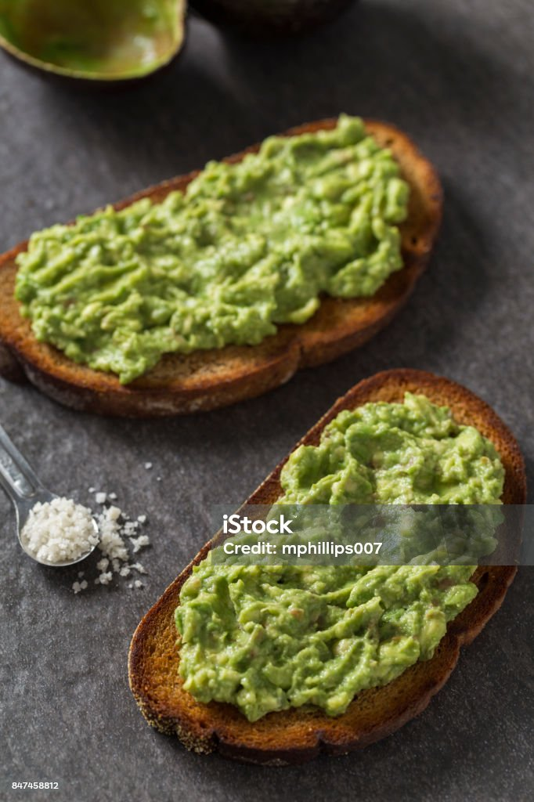

Avocado Toast

Ingredients
- 1 ripe avocado
- 2 slices of bread (whole wheat, sourdough, or any preferred type)
- 1 tbsp olive oil (optional)
- Salt (to taste)
- Black pepper (to taste)
- Red pepper flakes (optional)
- Lemon juice (optional)
- Cherry tomatoes or poached egg (optional, for topping)
Steps
- Toast the bread: Toast the bread slices until golden brown, either in a toaster or on a skillet.
- Prepare the avocado: Cut the avocado in half, remove the pit, and scoop the flesh into a bowl. Mash with a fork until smooth or leave it slightly chunky, depending on preference.
- Season: Add a squeeze of lemon juice, salt, and black pepper to the mashed avocado. Optionally, drizzle with olive oil.
- Assemble: Spread the mashed avocado generously on each slice of toasted bread.
- Optional toppings: Add red pepper flakes for heat or top with sliced cherry tomatoes or a poached egg for extra flavor.
- Serve: Serve immediately as a quick breakfast or snack.
Home